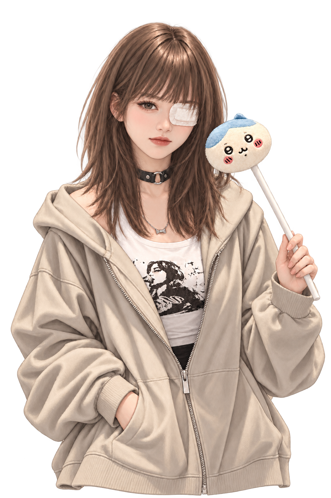
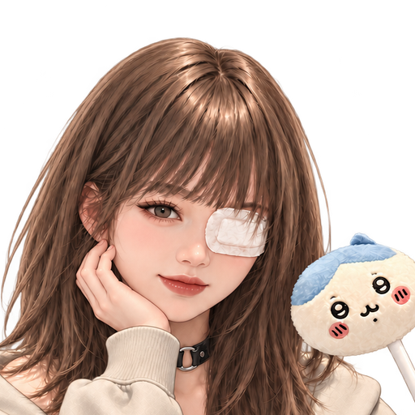
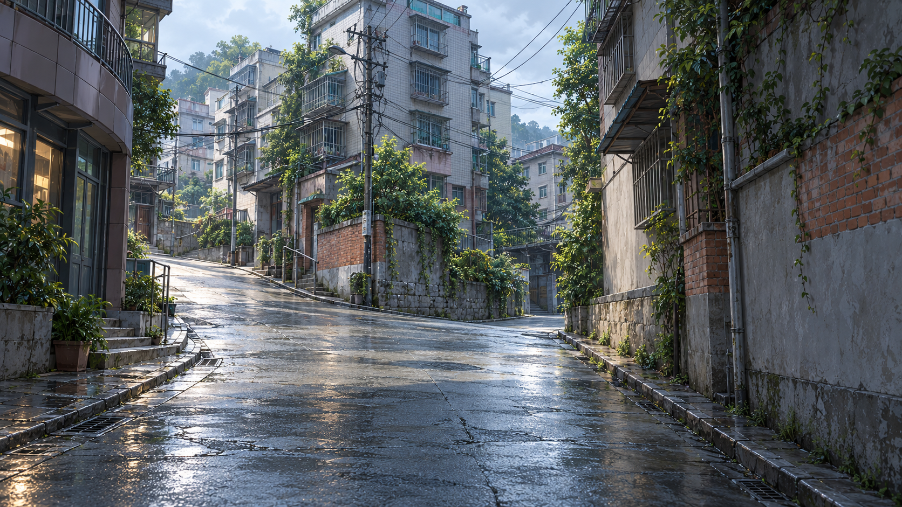
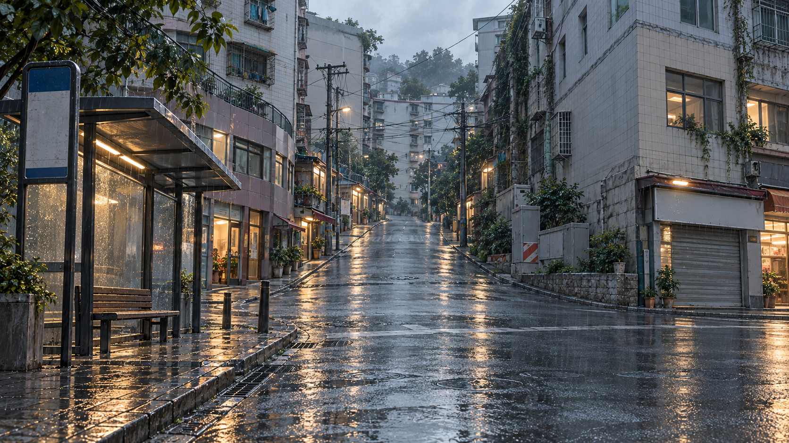
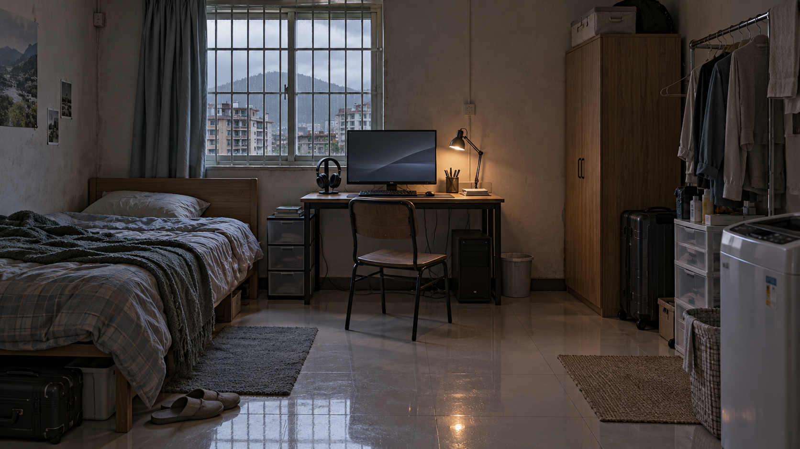
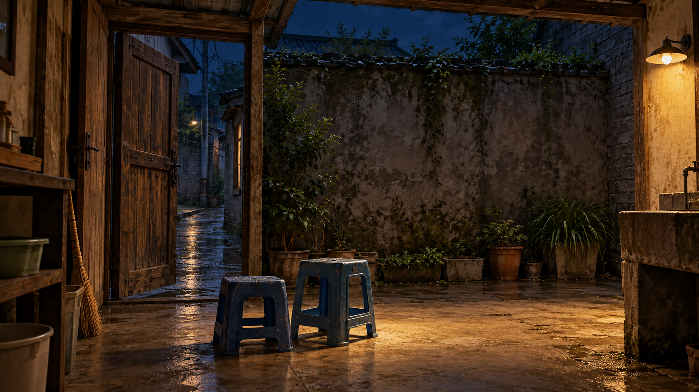
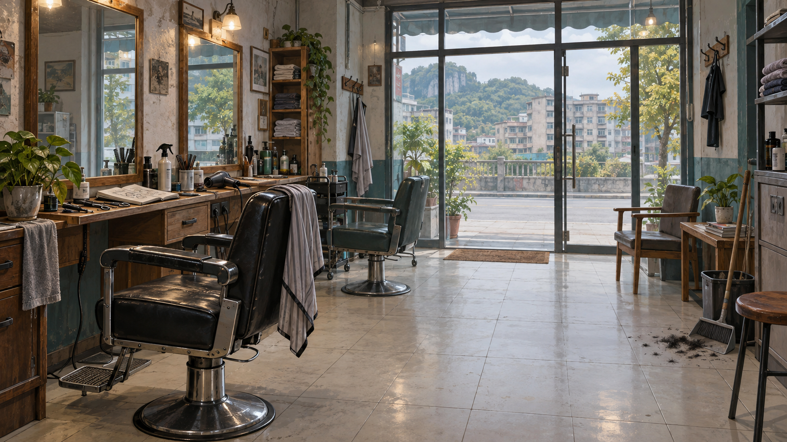
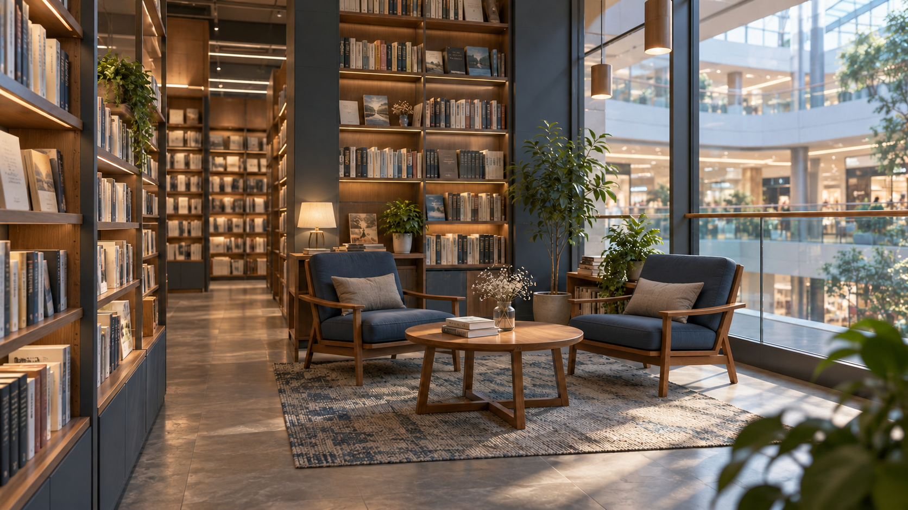
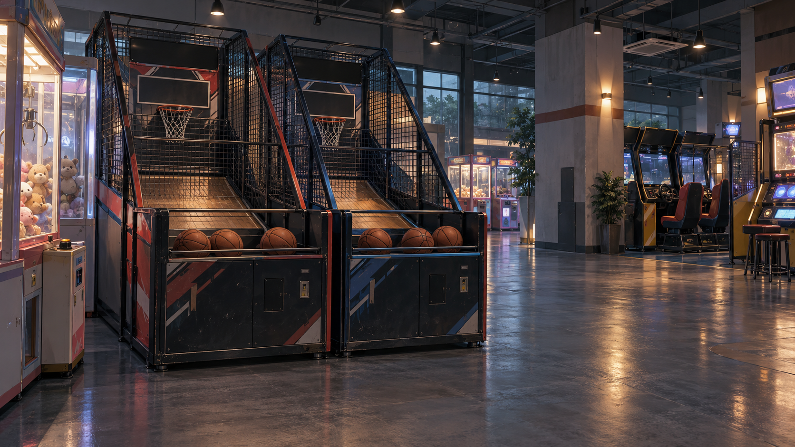
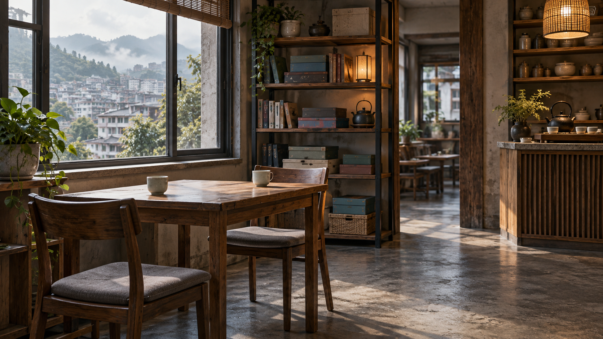

A02 · 角色／差分 · 1024 × 1536
文文·人形·base
tc-char-wenwen-human-base
表情必须使用本批职业适配整组，禁止旧维修工具／相机／夹板回流。
查看原尺寸 WebP ↗本轮静态采用 138 张 WebP：常规角色 53、黄球球主图 12／头像 12、背景 55、CG 4、封面 2。点击图片查看原尺寸。
资源采用已完成，游戏绑定由 E09 执行。飘四处未点名桌边场景按用户决定保留映射待定；中性章末由 E09 处理。背景／CG须保留完整构图，窄屏游戏效果由 E10 验证。
tc-char-wenwen-human-base
表情必须使用本批职业适配整组，禁止旧维修工具／相机／夹板回流。
查看原尺寸 WebP ↗
tc-char-wenwen-human-expression-hesitant
表情必须使用本批职业适配整组，禁止旧维修工具／相机／夹板回流。
查看原尺寸 WebP ↗
tc-char-wenwen-human-expression-smile
表情必须使用本批职业适配整组，禁止旧维修工具／相机／夹板回流。
查看原尺寸 WebP ↗


tc-char-shijiang-human-expression-serious
查看原尺寸 WebP ↗
tc-char-wenwen-human-expression-tired
表情必须使用本批职业适配整组，禁止旧维修工具／相机／夹板回流。
查看原尺寸 WebP ↗

tc-char-yelan-human-base
表情必须使用本批职业适配整组，禁止旧维修工具／相机／夹板回流。
查看原尺寸 WebP ↗


tc-char-xiaoman-human-expression-hesitant
查看原尺寸 WebP ↗
tc-char-mengyao-human-base
表情必须使用本批职业适配整组，禁止旧维修工具／相机／夹板回流。
查看原尺寸 WebP ↗
tc-char-mengyao-human-expression-hesitant
表情必须使用本批职业适配整组，禁止旧维修工具／相机／夹板回流。
查看原尺寸 WebP ↗
tc-char-mengyao-human-expression-smile
表情必须使用本批职业适配整组，禁止旧维修工具／相机／夹板回流。
查看原尺寸 WebP ↗


tc-char-wenwen-human-expression-downcast
表情必须使用本批职业适配整组，禁止旧维修工具／相机／夹板回流。
查看原尺寸 WebP ↗
tc-char-yelan-human-expression-hesitant
表情必须使用本批职业适配整组，禁止旧维修工具／相机／夹板回流。
查看原尺寸 WebP ↗
tc-char-yelan-human-expression-smile
表情必须使用本批职业适配整组，禁止旧维修工具／相机／夹板回流。
查看原尺寸 WebP ↗
tc-char-wenwen-human-expression-surprised
表情必须使用本批职业适配整组，禁止旧维修工具／相机／夹板回流。
查看原尺寸 WebP ↗
tc-char-xiaoman-human-expression-serious
查看原尺寸 WebP ↗
tc-char-zhouzhi-human-expression-serious
查看原尺寸 WebP ↗
tc-char-mengyao-human-expression-serious
表情必须使用本批职业适配整组，禁止旧维修工具／相机／夹板回流。
查看原尺寸 WebP ↗
tc-char-wenwen-human-expression-serious
表情必须使用本批职业适配整组，禁止旧维修工具／相机／夹板回流。
查看原尺寸 WebP ↗
tc-char-mengyao-human-expression-downcast
表情必须使用本批职业适配整组，禁止旧维修工具／相机／夹板回流。
查看原尺寸 WebP ↗


tc-char-maolang-human-expression-hesitant
查看原尺寸 WebP ↗
tc-char-xiaoman-human-expression-downcast
查看原尺寸 WebP ↗

tc-char-yelan-human-expression-serious
表情必须使用本批职业适配整组，禁止旧维修工具／相机／夹板回流。
查看原尺寸 WebP ↗
tc-char-maolang-human-expression-serious
查看原尺寸 WebP ↗
tc-char-zhouzhi-human-expression-hesitant
查看原尺寸 WebP ↗
tc-char-shijiang-human-expression-hesitant
查看原尺寸 WebP ↗

tc-char-mengyao-human-expression-tired
表情必须使用本批职业适配整组，禁止旧维修工具／相机／夹板回流。
查看原尺寸 WebP ↗
tc-char-yelan-human-expression-tired
表情必须使用本批职业适配整组，禁止旧维修工具／相机／夹板回流。
查看原尺寸 WebP ↗
tc-char-zhouzhi-human-expression-downcast
查看原尺寸 WebP ↗
tc-char-yelan-human-expression-downcast
表情必须使用本批职业适配整组，禁止旧维修工具／相机／夹板回流。
查看原尺寸 WebP ↗
tc-look-xiaoman-work-apron
仅基础姿态；保持所选衣装，不回退日常衣装表情。
查看原尺寸 WebP ↗
tc-look-xiaoman-new-coat
仅基础姿态；保持所选衣装，不回退日常衣装表情。
查看原尺寸 WebP ↗
tc-look-mengyao-teacher-bag
仅基础姿态；保持所选衣装，不回退日常衣装表情。
查看原尺寸 WebP ↗
tc-look-mengyao-casual-jacket
仅基础姿态；保持所选衣装，不回退日常衣装表情。
查看原尺寸 WebP ↗
tc-look-yelan-casual
仅基础姿态；保持所选衣装，不回退日常衣装表情。
查看原尺寸 WebP ↗
tc-look-zhouzhi-light-blue-shirt
仅基础姿态；保持所选衣装，不回退日常衣装表情。
查看原尺寸 WebP ↗
tc-look-zhouzhi-tied-hair
仅基础姿态；保持所选衣装，不回退日常衣装表情。
查看原尺寸 WebP ↗
tc-look-maolang-wedding
仅基础姿态；保持所选衣装，不回退日常衣装表情。
查看原尺寸 WebP ↗
tc-look-piao-wedding
仅基础姿态；保持所选衣装，不回退日常衣装表情。
查看原尺寸 WebP ↗
tc-char-huangqiuqiu-orb-base
按历史qiuForm选择立绘与头像；不能跨形态回退。 完整画布等比显示，不补设计下装。
查看原尺寸 WebP ↗
tc-char-huangqiuqiu-orb-expression-serious
按历史qiuForm选择立绘与头像；不能跨形态回退。 完整画布等比显示，不补设计下装。
查看原尺寸 WebP ↗tc-char-huangqiuqiu-orb-expression-smile
按历史qiuForm选择立绘与头像；不能跨形态回退。 完整画布等比显示，不补设计下装。
查看原尺寸 WebP ↗
tc-char-huangqiuqiu-orb-expression-hesitant
按历史qiuForm选择立绘与头像；不能跨形态回退。 完整画布等比显示，不补设计下装。
查看原尺寸 WebP ↗tc-avatar-huangqiuqiu-sphere-expression-hesitant
与立绘形态及表情同步。
查看原尺寸 WebP ↗tc-look-huangqiuqiu-orb-hand
按历史qiuForm选择立绘与头像；不能跨形态回退。 完整画布等比显示，不补设计下装。
查看原尺寸 WebP ↗tc-char-huangqiuqiu-human-base
按历史qiuForm选择立绘与头像；不能跨形态回退。 完整画布等比显示，不补设计下装。
查看原尺寸 WebP ↗tc-char-huangqiuqiu-human-expression-smile
按历史qiuForm选择立绘与头像；不能跨形态回退。 完整画布等比显示，不补设计下装。
查看原尺寸 WebP ↗tc-char-huangqiuqiu-human-expression-hesitant
按历史qiuForm选择立绘与头像；不能跨形态回退。 完整画布等比显示，不补设计下装。
查看原尺寸 WebP ↗
tc-char-huangqiuqiu-human-expression-serious
按历史qiuForm选择立绘与头像；不能跨形态回退。 完整画布等比显示，不补设计下装。
查看原尺寸 WebP ↗
tc-char-huangqiuqiu-human-expression-downcast
按历史qiuForm选择立绘与头像；不能跨形态回退。 完整画布等比显示，不补设计下装。
查看原尺寸 WebP ↗
tc-char-huangqiuqiu-human-action-wave
按历史qiuForm选择立绘与头像；不能跨形态回退。 完整画布等比显示，不补设计下装。
查看原尺寸 WebP ↗
tc-look-huangqiuqiu-human-chin
按历史qiuForm选择立绘与头像；不能跨形态回退。 完整画布等比显示，不补设计下装。
查看原尺寸 WebP ↗

tc-bg-street-day
中央街道可辨；左右店面与坡口不应作为裁后必读线索。 按实际尺寸采用；窄屏先完整保留横图，不能宣称居中cover安全。
查看原尺寸 WebP ↗
tc-bg-street-dusk
保持与日景同一街道结构，左右门面需全景建立。 按实际尺寸采用；窄屏先完整保留横图，不能宣称居中cover安全。
查看原尺寸 WebP ↗
tc-bg-slope-day
坡道、栏墙能作中性街景；需要完整转弯关系时保留全幅。 按实际尺寸采用；窄屏先完整保留横图，不能宣称居中cover安全。
查看原尺寸 WebP ↗
tc-bg-busstop-day
站棚和长凳横向展开；居中竖裁会丢失部分设施。 按实际尺寸采用；窄屏先完整保留横图，不能宣称居中cover安全。
查看原尺寸 WebP ↗tc-bg-busstop-dusk
同站棚傍晚；保持站棚与道路整体关系。 按实际尺寸采用；窄屏先完整保留横图，不能宣称居中cover安全。
查看原尺寸 WebP ↗
tc-bg-netcafe-counter-day
收银台、玻璃入口及邻近机位跨越横幅；先以全景建立网吧。 按实际尺寸采用；窄屏先完整保留横图，不能宣称居中cover安全。
查看原尺寸 WebP ↗
tc-bg-netcafe-pc-day
双机位偏左、柜台偏右；居中竖裁只剩部分屏幕。 按实际尺寸采用；窄屏先完整保留横图，不能宣称居中cover安全。
查看原尺寸 WebP ↗
tc-bg-courtyard-day
两只蓝凳位于下部；对话框勿盖住两凳与门槛；无球球预置。 按实际尺寸采用；窄屏先完整保留横图，不能宣称居中cover安全。
查看原尺寸 WebP ↗
tc-bg-rental-day
床偏左、桌与椅居中；全幅可同时交代单人床、书桌与生活角。 按实际尺寸采用；窄屏先完整保留横图，不能宣称居中cover安全。
查看原尺寸 WebP ↗
tc-bg-netcafe-counter-night
与日景同构；人物避免覆盖柜台与门口。 按实际尺寸采用；窄屏先完整保留横图，不能宣称居中cover安全。
查看原尺寸 WebP ↗
tc-bg-netcafe-pc-night
双机位位置沿用日景；空场背景不固定顾客身份。 按实际尺寸采用；窄屏先完整保留横图，不能宣称居中cover安全。
查看原尺寸 WebP ↗
tc-bg-backdoor-night
门外视角；门缝不显球形／人形，隐藏线身份由节点控制。 按实际尺寸采用；窄屏先完整保留横图，不能宣称居中cover安全。
查看原尺寸 WebP ↗
tc-bg-courtyard-night
与日景同构；门框天空、两凳和侧门需全景或分镜保留。 按实际尺寸采用；窄屏先完整保留横图，不能宣称居中cover安全。
查看原尺寸 WebP ↗
tc-bg-rental-night
沿用同一出租屋几何；夜景桌灯不代表额外剧情事件。 按实际尺寸采用；窄屏先完整保留横图，不能宣称居中cover安全。
查看原尺寸 WebP ↗tc-bg-breakfast-dawn
门外清晨天光、桌位和蒸笼横向分布；不要裁成纯夜宵室内。 按实际尺寸采用；窄屏先完整保留横图，不能宣称居中cover安全。
查看原尺寸 WebP ↗
tc-bg-salon-day
镜台与椅子建立理发店；旧图的边缘设施不作为新剧情事实。 按实际尺寸采用；窄屏先完整保留横图，不能宣称居中cover安全。
查看原尺寸 WebP ↗
tc-bg-convenience-day
柜台、货架及门外椅需全景；仅裁货架会弱化会面位置。 按实际尺寸采用；窄屏先完整保留横图，不能宣称居中cover安全。
查看原尺寸 WebP ↗
tc-bg-food-day
中性桌位；不同店可复用质感，但需转场文字区分地址。 按实际尺寸采用；窄屏先完整保留横图，不能宣称居中cover安全。
查看原尺寸 WebP ↗
tc-bg-food-dusk
同店日暮衔接；食物按文本或独立道具层表达。 按实际尺寸采用；窄屏先完整保留横图，不能宣称居中cover安全。
查看原尺寸 WebP ↗
tc-bg-food-night
保留旧版无人夜景；不能替代早餐清晨。 按实际尺寸采用；窄屏先完整保留横图，不能宣称居中cover安全。
查看原尺寸 WebP ↗tc-bg-food-front-dusk
门外与店内为不同机位；入口需全景建立。 按实际尺寸采用；窄屏先完整保留横图，不能宣称居中cover安全。
查看原尺寸 WebP ↗
tc-bg-stall-day
食品摊及雨棚横向展开，前景食物可能被对白遮住。 按实际尺寸采用；窄屏先完整保留横图，不能宣称居中cover安全。
查看原尺寸 WebP ↗tc-bg-stall-night
沿用同摊夜景；不把日间原文直接套入夜色。 按实际尺寸采用；窄屏先完整保留横图，不能宣称居中cover安全。
查看原尺寸 WebP ↗tc-bg-eaves-day
连续屋檐及湿街关系需保留横幅。 按实际尺寸采用；窄屏先完整保留横图，不能宣称居中cover安全。
查看原尺寸 WebP ↗tc-bg-echo-day
目标双门位于画面最左侧；居中竖裁会完全丢门，必须保留全景或左侧构图。 按实际尺寸采用；窄屏先完整保留横图，不能宣称居中cover安全。
查看原尺寸 WebP ↗
tc-bg-echo-closed-day
左侧目标双门关闭、内部熄灯；不能只裁中间街道。 按实际尺寸采用；窄屏先完整保留横图，不能宣称居中cover安全。
查看原尺寸 WebP ↗
tc-bg-bookstore-day
双阅读椅在桌子两侧；居中竖裁不能完整保留双座位。 按实际尺寸采用；窄屏先完整保留横图，不能宣称居中cover安全。
查看原尺寸 WebP ↗
tc-bg-mall-day
休息区与电梯需全景关系；中央裁切仅用于中性商场过场。 按实际尺寸采用；窄屏先完整保留横图，不能宣称居中cover安全。
查看原尺寸 WebP ↗
tc-bg-bridge-day
烧饼店、桥栏与台阶分处横幅；对话和人物勿遮住台阶。 按实际尺寸采用；窄屏先完整保留横图，不能宣称居中cover安全。
查看原尺寸 WebP ↗tc-bg-park-day
树荫、步道与长椅同时出现需全幅；不固定鸭／纸船等分支道具。 按实际尺寸采用；窄屏先完整保留横图，不能宣称居中cover安全。
查看原尺寸 WebP ↗tc-bg-river-day
步道、长椅、可避雨台阶需完整关系；下部台阶可能被对白遮挡。 按实际尺寸采用；窄屏先完整保留横图，不能宣称居中cover安全。
查看原尺寸 WebP ↗
tc-bg-riverside-lawn-day
保留空地与河边关系；风筝由道具或CG承载，不预置分支结果。 按实际尺寸采用；窄屏先完整保留横图，不能宣称居中cover安全。
查看原尺寸 WebP ↗
tc-bg-alteration-day
工作台与衣物可辨；重点线轴／袖口动作另用道具或CG。 按实际尺寸采用；窄屏先完整保留横图，不能宣称居中cover安全。
查看原尺寸 WebP ↗
tc-bg-arcade-basketball
双篮机横向并列；勿竖裁成单人设备。 按实际尺寸采用；窄屏先完整保留横图，不能宣称居中cover安全。
查看原尺寸 WebP ↗
tc-bg-arcade-airhockey
完整球台与两端站位需要全幅，人物避免压住两端。 按实际尺寸采用；窄屏先完整保留横图，不能宣称居中cover安全。
查看原尺寸 WebP ↗
tc-bg-arcade-rowing
双座与双手柄需同时显示；不要仅裁出一个座位。 按实际尺寸采用；窄屏先完整保留横图，不能宣称居中cover安全。
查看原尺寸 WebP ↗
tc-bg-used-books-day
书摊、棚下石阶和可坐位置要同时保留。 按实际尺寸采用；窄屏先完整保留横图，不能宣称居中cover安全。
查看原尺寸 WebP ↗
tc-bg-used-books-closed-dusk
同一棚与台阶，书已收起；不能回用开摊图。 按实际尺寸采用；窄屏先完整保留横图，不能宣称居中cover安全。
查看原尺寸 WebP ↗tc-bg-cinema-interior
影院过道可辨；屏幕保持抽象，不含真实电影。 按实际尺寸采用；窄屏先完整保留横图，不能宣称居中cover安全。
查看原尺寸 WebP ↗
tc-bg-tea-day
双人桌位保持全幅；桌游／书页文字另层，复用不等于同一店。 按实际尺寸采用；窄屏先完整保留横图，不能宣称居中cover安全。
查看原尺寸 WebP ↗tc-bg-secondhand-day
玩具与杂货摊是环境；具体小鸭等选购道具需节点演出。 按实际尺寸采用；窄屏先完整保留横图，不能宣称居中cover安全。
查看原尺寸 WebP ↗
tc-bg-kiosk-eaves-day
雨棚和旧牌分布在横幅边侧；半个“发”字、纸船与收据另层。 按实际尺寸采用；窄屏先完整保留横图，不能宣称居中cover安全。
查看原尺寸 WebP ↗
tc-bg-performance-shop-day
店内小舞台与普通桌椅须共存，不能裁成独立大型舞台。 按实际尺寸采用；窄屏先完整保留横图，不能宣称居中cover安全。
查看原尺寸 WebP ↗
tc-bg-game-store-day
旧游戏设备与门口矮凳需全景交代，矮凳容易被对白遮挡。 按实际尺寸采用；窄屏先完整保留横图，不能宣称居中cover安全。
查看原尺寸 WebP ↗
tc-bg-parcel-day
货架与门口分列；不把裁切后货架当作人物住宅。 按实际尺寸采用；窄屏先完整保留横图，不能宣称居中cover安全。
查看原尺寸 WebP ↗
tc-bg-supermarket-day
日用品、米袋及货架作为中性购物环境；包装无必读文字。 按实际尺寸采用；窄屏先完整保留横图，不能宣称居中cover安全。
查看原尺寸 WebP ↗
tc-bg-clothing-day
普通服装与饰品环境；不补人物试穿结果。 按实际尺寸采用；窄屏先完整保留横图，不能宣称居中cover安全。
查看原尺寸 WebP ↗
tc-bg-practice-room
蓝灯、双话筒与两杯冰水在桌面；保留全幅及下部桌面，非回声营业。 按实际尺寸采用；窄屏先完整保留横图，不能宣称居中cover安全。
查看原尺寸 WebP ↗
tc-bg-tabletennis-day
球桌、球网与场边座椅需同时保留。 按实际尺寸采用；窄屏先完整保留横图，不能宣称居中cover安全。
查看原尺寸 WebP ↗
tc-bg-badminton-day
球网与完整场地几何及座椅需全景，不宜中央竖裁。 按实际尺寸采用；窄屏先完整保留横图，不能宣称居中cover安全。
查看原尺寸 WebP ↗
tc-bg-xiaoman-home-day
桌上两袋均为番茄，靠下；对白不应把两袋全部盖住。 按实际尺寸采用；窄屏先完整保留横图，不能宣称居中cover安全。
查看原尺寸 WebP ↗
tc-bg-maolang-home-day
普通家中餐桌；餐具数量不推定正文未列的来客。 按实际尺寸采用；窄屏先完整保留横图，不能宣称居中cover安全。
查看原尺寸 WebP ↗tc-bg-banquet-day
仅普通婚宴空间候选；不增加正文未列宾客，不出现球球。 按实际尺寸采用；窄屏先完整保留横图，不能宣称居中cover安全。
查看原尺寸 WebP ↗
tc-bg-echo-closed-dawn
左侧双门保持关闭、门灯关闭；清晨天空已亮。 按实际尺寸采用；窄屏先完整保留横图，不能宣称居中cover安全。
查看原尺寸 WebP ↗
tc-bg-bridge-dusk
日景同构暖光；仍须保留桥与烧饼店的关系。 按实际尺寸采用；窄屏先完整保留横图，不能宣称居中cover安全。
查看原尺寸 WebP ↗


tc-cg-piao-choice
仅飘路线、选择前的共同谈话。选择后退出CG，交往／朋友分别使用差分和文本；朋友版不得牵手。 A01候选锚点列表偏重选择后段，本图实际建议是选择前河边共同段，以E06节点原文为准。
查看原尺寸 WebP ↗
tc-cg-last-echo-dinner
第30天18:00共通饭局局部镜头；其他在场角色位于画外，先用背景＋立绘交代全员。 只用于菜端上来后的谈话，不替代周栀离席、回声关门或文文网吧到岗。
查看原尺寸 WebP ↗
tc-cg-qiuqiu-transform
仅已相识且当前路线huangqiuqiu；必须已执行human_reveal的onEnter并且qiuForm=human。 只表现变身后扶正玩偶棒，不得在轻搭手、松手、退凳或球形变化时提前显示。恋爱选择不参与触发。 不用于第42天、不放公开封面／未解锁回顾，婚宴不得出现。
查看原尺寸 WebP ↗
tc-cg-piao-wedding
仅E03公共婚宴分支：排除route=piao且piaoRelationship=dating；绝不放到文文与飘交往的朋友饭局。 E03 ch10场景已指定普通小店婚宴，沿A04空间制作。毛狼便西装、飘简洁礼裙沿A02用户确认。 第二版册子身份由原文交代，封面不生成文字；球球及未确认宾客不入镜。
查看原尺寸 WebP ↗